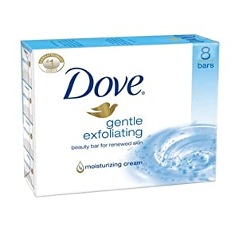
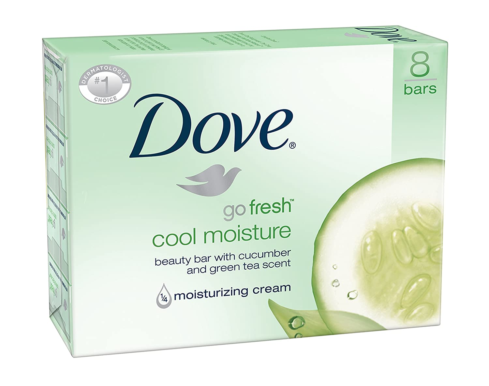
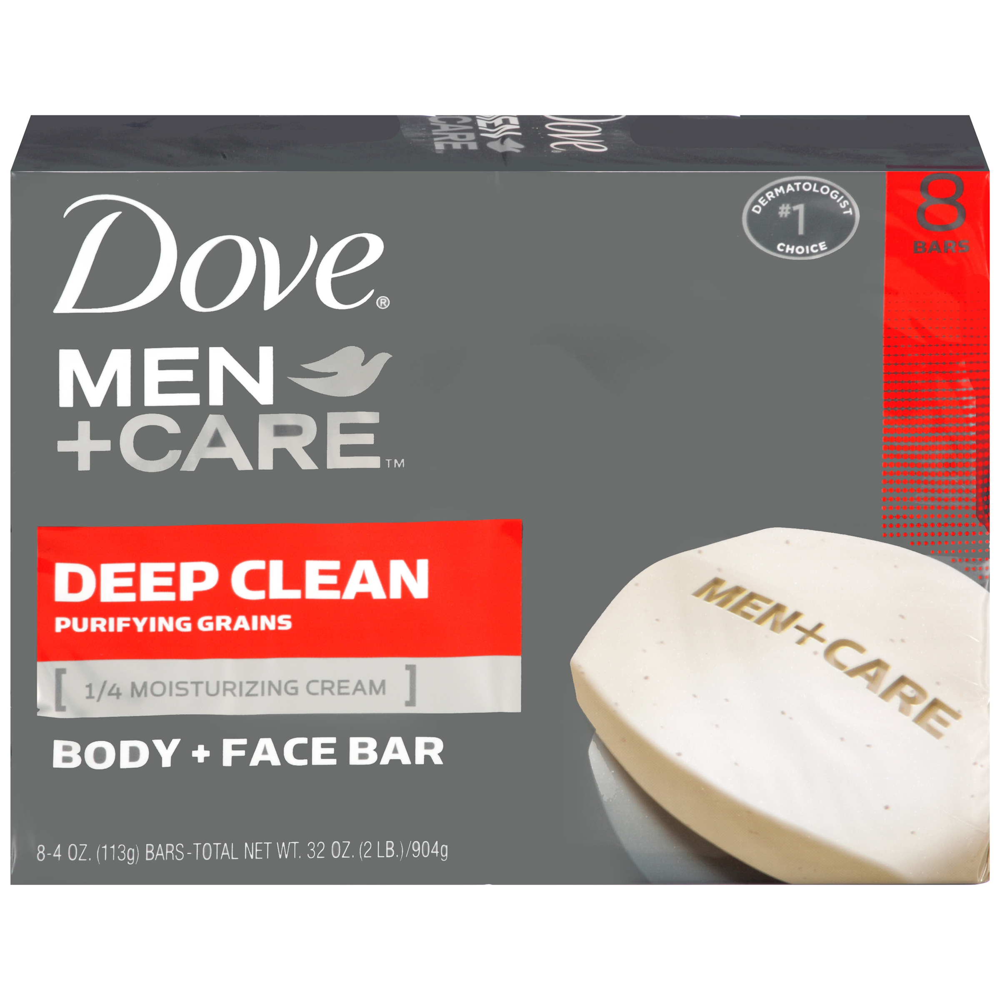
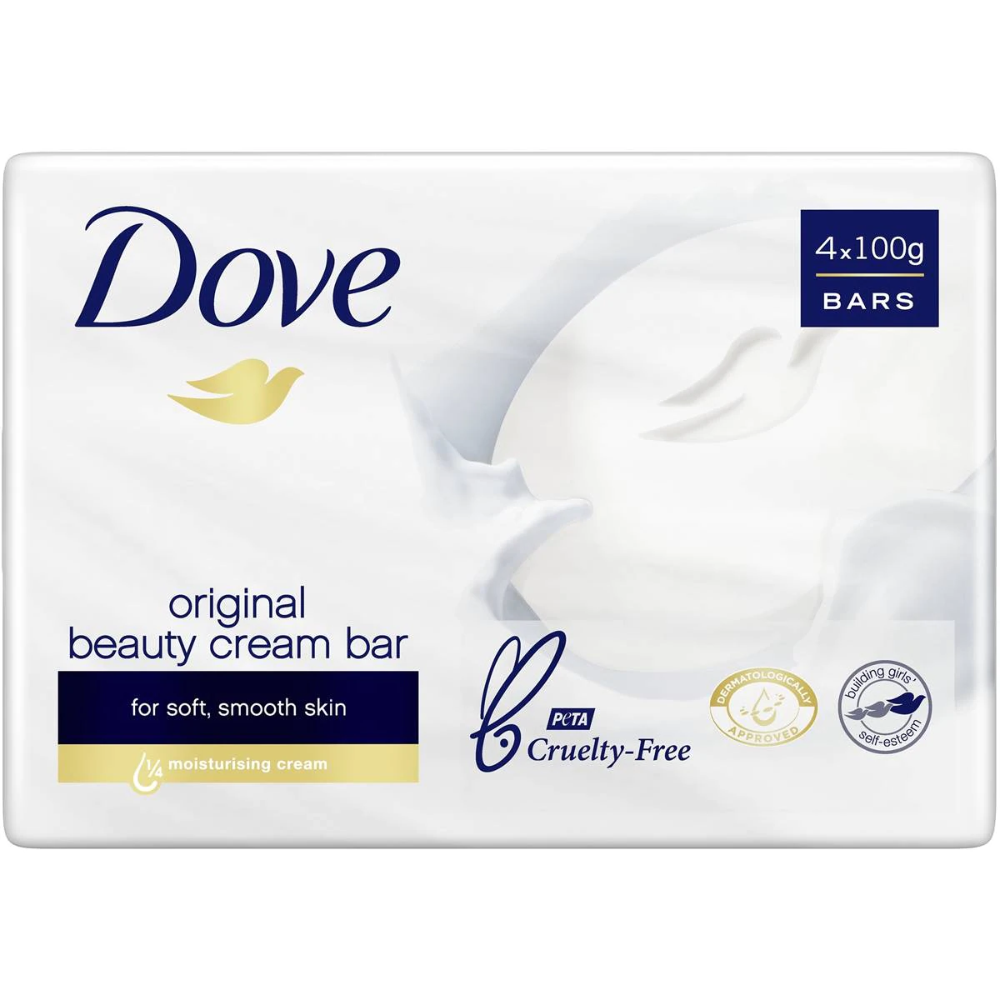
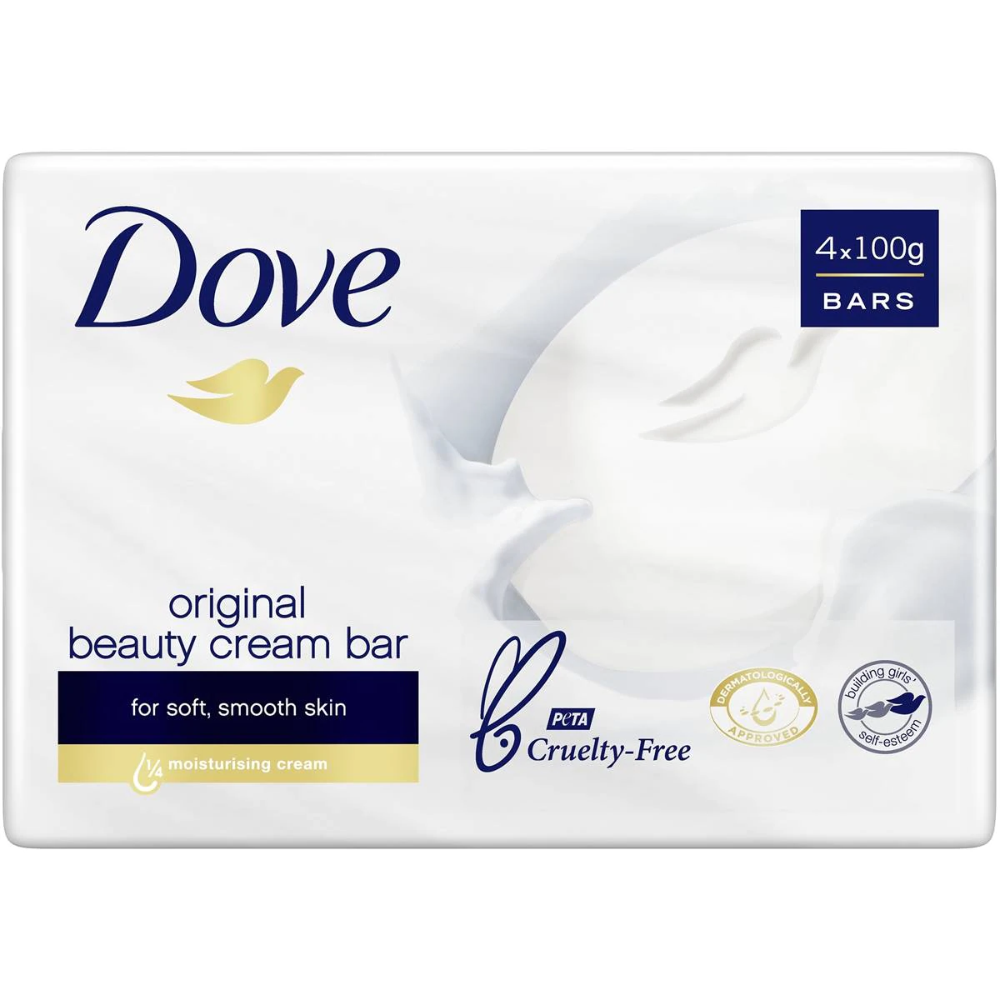

Made For Sensitive Skin Dove Sensitive Skin Beauty Bar is a Fragrance-free, hypoallergenic bar that's gentle on sensitive skin.

About this item
| Ingredients | Scent | Brand | Skin Type | Item Weight | Dimension |
|---|---|---|---|---|---|
| Sodium Lauroyl Isethionate, Stearic Acid, Sodium Tallowate Or Sodium Palmitate, Lauric Acid, Sodium Isethionate, Water, Sodium Stearate, Cocamidopropyl Betaine, Sodium Cocoate Or Sodium Chloride, Tetrasodium Etidronate, Malto, Titanium Dioxide(Ci77891). | Sensitive Skin | Dove | Sensitive | 4 Pounds | 5.75 x5.25 x7.5 inches |
Product details
Price: R245,750
Stock available: 45 items
Here are some Dove Soap that you can consider using for your body and face
  
 
